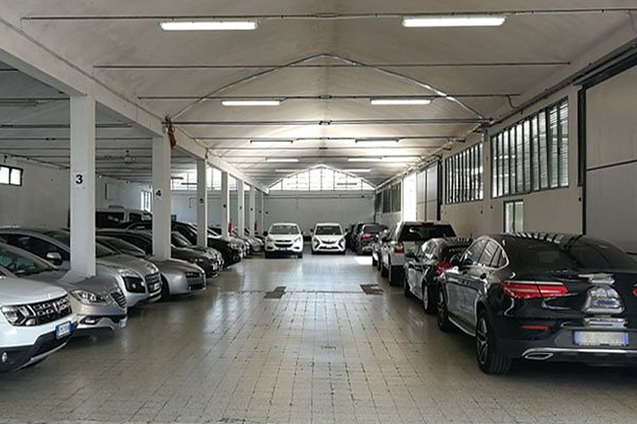

P1 100 metri dal terminal
P1 coperto
L'auto al riparo da sole, grandine e neve, le chiavi in custodia da noi.
- Custodito dalle 5:00 alle 23:00
- Consegna delle chiavi obbligatoria, custodia gratuita
- Messa in moto e gonfiaggio pneumatici compresi
- Tunnel coperto fino al terminal
10,00 € al giorno
Prenota il P1 coperto